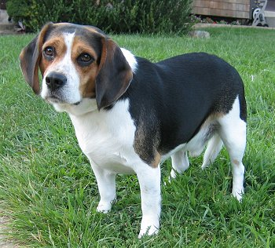

BEAGLE, desapareu... Por favor ajudem. Ele precisa de medicamentos continuos por ser cardíaco. Desaparecu próximo ao mêtro paulista. Atende pelo nome "TOBY", pode entrar em contato com 7777-7777 (Rose)
BULL, cachorro encontrado na Lapa-SP, muito dócil. Estava muito assustado... Entrar contato com (Fábio) 8888-9999

COLLE, Perdi um ção no dia 28, na rua Julia Rica ás 17hrs. Ele está na minha há 4 longos anos. Obrigada! Contato com (Laís) 7788-9999

Atendimento: atendimento@desaparecidos.com-(OXX) 9999-9999 / (OXX) 8888-8888